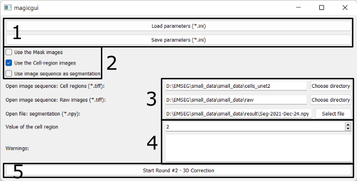

Specify images/parameters in 3D correction
Parameter panels

1. Save/Load the configurations
- Users can save the specified parameters in a configuration (.ini) file and reload it later to avoid having to set them every time the software is launched.
- Users can load the same configuration file used in the Seg2D+Link module to reuse the shared parameters.
- Users can modify other advanced parameters (e.g. the maximal number of steps of cached actions) in the saved .ini files (Explanations).
2. Use xxx images
There are three options:
- Use the Mask images
- Check it if you want to display the mask image.
- If the configuration file is loaded from Round 1 that does not use mask images, this option becomes invisible.
- Use the Cell-region images
- Check it if you want to display the predictions of the cell/non-cell regions.
- Use image sequence as segmentation
- Check it if you want to use 3D segmentation which is generated from other software and is saved as 2D TIFF images.
- Do not check it if you have used Seg2D+Link module and saved the 3D segmentation result in npy format.
3. Paths of images / segmentation results
Users should specify following paths:
- The folder containing the cell/non-cell prediction images (2D TIFF images);
- The folder containing the raw images (2D TIFF images);
- The path to the previously created segmentation results file.
- Uncheck the box in 2-3 to use the segmentation result in npy format.
- Check the box in 2-3 to use the segmentation result saved as 2D TIFF images.
- The folder containing the mask images (2D TIFF images).
- This option is only available if you checked the box in 2-1.
4. Parameters & Warning
The parameter (value of cell region) and warning here are similar to the ones in Parameters and Warning in Round 1.
5. Start the 3D correction Module
Press this button to launch the 3D correction module.